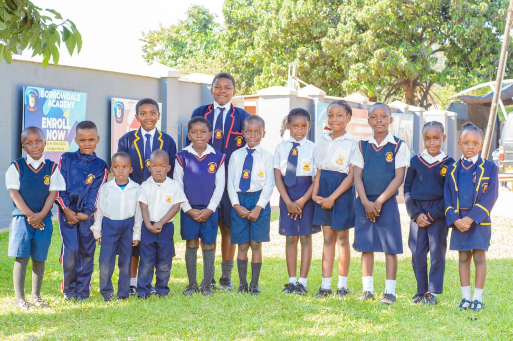

Featured Issue
Creativity in Every Frame
This temporary magazine page is ready for UI testing. It gives you a polished preview of how future issues can look.
Club Spotlight
Students are capturing school life, building stories, and exploring media through photography, video, and design.

What's Inside
- Student photography highlights
- Behind-the-scenes club moments
- Creative captions and features
- Upcoming events and projects